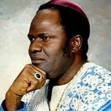

Church of God Mission International Incorporated was divinely born by the urge of the Holy Spirit with specific instructions of the Lord to Archbishop B.A. Idahosa as stated:
“Raise up an army for me, to go with the gospel to all Nations. Gather together those whom I have called and I will send them with the fire of my spirit. Give my word and your example to many who will go to teach, preach and heal”
Church of God Mission International, as it known today, grew from a very humble beginning in 1962 as a prayer group first named Calvary Fellowship at a shop on Ivbizua Street, off Mission Road. It was officially inaugurated in 1965 by Rev. Edgar Perkins. On October 26th 1968, Rev. Perkins approached the Assemblies of God to release Benson Idahosa, then a Sunday School Superintendent, to oversee the prayer ministry. The fellowship moved to No. 26, Forestry Road, Benin City with Pastor Benson Idahosa fully in-charge. The membership of the fellowship grew numerically. Pastor Benson Idahosa decided to build a church and this began his building ministry. He moved the members to Iyaro Church and on 18th of September, 1974. The church was registered under the Land perpetual succession Acts and Certificate number 1245 was issued. By the time Church of God Mission Iyaro was completed the membership had risen tremendously. The church was declared opened by Papa Gordon Lindsay and Papa Elton.
Church of God’s primary ministry was evangelism-Living up to her motto: Evangelism our Supreme Task, the church engaged in street evangelism and open air crusades. Through these activities souls were daily added to the church and everywhere papa went with the gospel churches were planted and solid structures erected.
In keeping with his belief of a ministry building that keeps up with the times, and to accommodate the influx of converts, the Archbishop laid the foundation of another church called Miracle Centre, on airport road, Benin City on Saturday 1st December, 1973 which was dedicated on Sunday 9th November, 1975 by Mrs. Freda Lindsay.
The continued growth of the ministry led to the building of Faith Miracle Centre auditorium, which many refer to as a marvel and was a vision fulfilled. In 1983, in far away Australia, the Archbishop heard God told him to build Him a building that will bring glory and honour to his name. The auditorium which is believed to seat over twenty thousand people was the first stadium church in Africa. It was dedicated and opened on 2nd November, 1986. Coinciding with the growth of churches in Benin was the planting of branches. Today Church of God Mission International has presence in all parts of Nigeria and the world over.
The ministry has developed infrastructures to strengthen her ability to fulfill her mandate preparing an army to rescue humanity for God. This she had done through the establishment of a viable Bible School – All Nations for Christ Bible Institute, to fulfill the educational need for pastors and contribute to building a vibrant society. The ministry has schools ranging from pre-Nursery (Word of Faith Group of Schools) to the university (Benson Idahosa University) and also functional medical facilities (Faith Mediplex Group of Hospitals) for all people. The ministry is resolved in her quest to produce whole persons in Spirit, soul and body.
All these accomplishments could not have happened without a focused, dynamic and spirit filled leaders by our father, Archbishop B.A. Idahosa. The ministry is still being maintained and enhanced by our go getting Archbishop M. E. Benson-Idahosa.
Archbishop Margaret Benson-Idahosa was born into the Royal lineage of the Benin Kingdom. She was ordained into the ministry on the 24th of May, 1983 and consecrated Bishop on the 5th of April, 1998. This position makes her the first female Pentecostal Bishop of a ministry of this magnitude in Africa, she was consecrated as Archbishop in November, 2009.
Together with her husband, she has preached the gospel of Jesus Christ in more than 140 nations covering all major continents of the world. She is not just a female preacher; she is a father and mother to many spiritual children all over the world. Her vision and mission is to reach the unreached
irrespective of whether they are in the desert or riverine creeks.
Since her consecration as Bishop, she has frequently travelled to America, Europe and parts of Africa and in communities far-flung from major towns and cities preaching, teaching and healing the sick.
Archbishop Margaret Benson-Idahosa’s love for children and the strong belief that they be trained and raised properly led to the establishment of the Word of Faith Group of Schools, which now has more than one hundred (100) branches all over Nigeria. She also has to her credit an Orphanage for abandoned babies.
The women's arm of the ministry, which goes by the name Christian Women Fellowship International (CWFI) is a non-denominational body founded by Archbishop Idahosa, to teach the woman how to discover their true potential, to be a good mother, wife and an instrument for end-time evangelism. Members of this body can be found in the Americas, Europe, Africa and Nigeria.
In line with this is the building of a multipurpose facility called the Restoration Centre with a capacity to seat more than 10,000 women. This centre will serve as conference venue, office space, a skill acquisition centre and a place to rehabilitate destitute young women.
Thousands have been delivered from the bondage of evil tradition, spiritually and have been economically empowered. A recent addition to the Restoration Centre is a Mobile Medical Clinic which offers free medical services to rural dwellers.